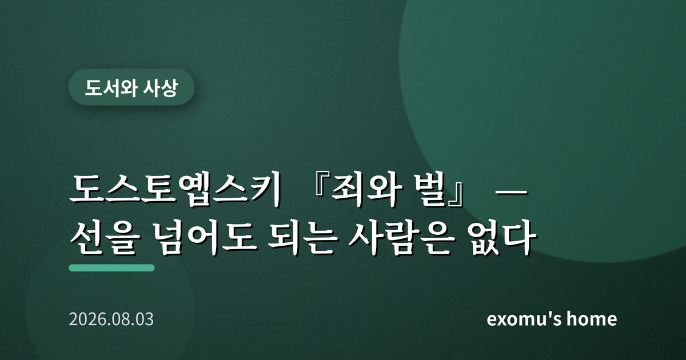
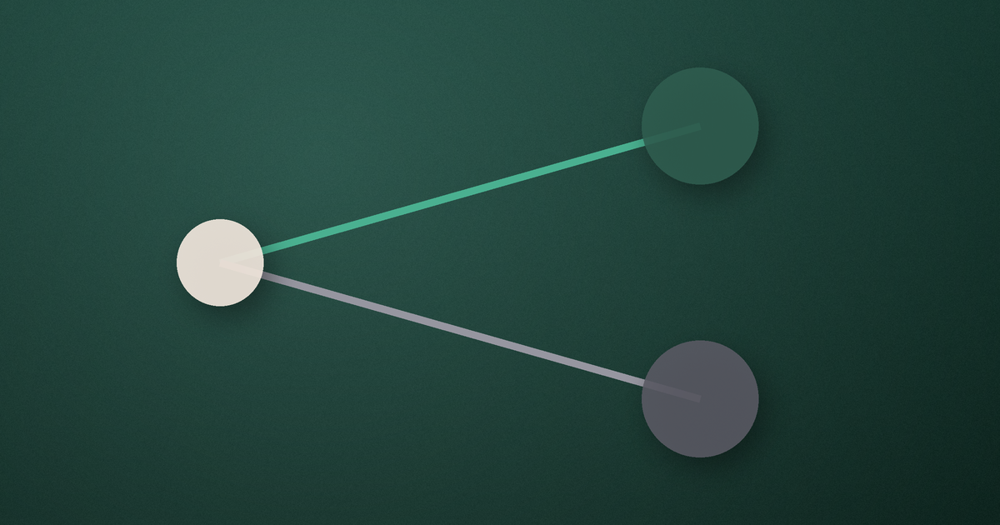

도스토옙스키 『죄와 벌』 — 선을 넘어도 되는 사람은 없다

나는 오래전 좁은 자취방에서 『죄와 벌』을 읽었다. 주인공 라스콜니코프가 사는 다락방이 꼭 내 방만 같아서였을까, 그의 열병 같은 생각들이 남의 일 같지 않았다. 그는 가난했고, 똑똑했고, 세상이 자신을 알아주지 않는다고 느꼈다. 그리고 하나의 위험한 생각에 사로잡힌다. 어떤 인간은 평범한 규칙을 넘어설 자격이 있는 것 아닐까. 나는 그 생각의 유혹이 얼마나 달콤한지 알 것 같았다.
비범한 인간이라는 논리
라스콜니코프는 세상 사람을 둘로 나눈다. 규칙에 순응하며 사는 평범한 다수와, 새로운 질서를 위해 낡은 규칙을 넘어서도 되는 소수의 비범한 인간. 그는 역사를 바꾼 위대한 인물들이 종종 피를 흘리게 했음을 떠올리며, 자신도 그런 부류일지 모른다고 스스로를 설득한다. 그리고 이 논리를 시험하듯, 인색한 전당포 노파를 살해한다. 그에게 그것은 단순한 범죄가 아니라 자신이 어떤 인간인지 확인하는 실험이었다.
이 대목에서 나는 서늘해졌다. 그의 논리는 언뜻 정교하고, 심지어 매력적으로 들린다. 목적이 크면 수단은 정당화되는가. 뛰어난 소수는 다수의 규칙에서 면제되는가. 이런 물음은 소설 속 다락방에만 있는 것이 아니다. 자기만의 예외를 만들고 싶은 마음은 누구에게나 조금씩 있다. 도스토옙스키는 그 마음의 끝까지 인물을 밀고 가서, 논리가 어떻게 무너지는지 보여 준다.
논리로 지운 것은 양심으로 되살아난다
살인 이후 라스콜니코프를 무너뜨린 것은 경찰의 수사가 아니라 그 자신이었다. 완전범죄에 가까웠음에도 그는 앓아눕고, 사람을 피하고, 끝없는 불안에 시달린다. 머리로는 '나는 정당했다'고 되뇌지만, 몸과 마음이 그 논리를 받아들이지 못한다. 도스토옙스키가 말하려는 것은 분명하다. 인간은 아무리 정교한 이론으로 무장해도, 자신이 넘어선 선을 스스로 견디지 못한다. 양심은 논리로 지워지지 않는다.
여기서 자유의 문제가 떠오른다. 라스콜니코프는 규칙을 넘어섬으로써 더 자유로워지려 했다. 그러나 그가 얻은 것은 자유가 아니라 고립이었다. 어떤 사상가들은 진정한 자유란 무엇이든 할 수 있는 상태가 아니라, 타인과의 관계 안에서 책임을 지는 능력이라고 보았다. 타인을 수단으로 삼는 순간 그는 세계와의 연결을 스스로 끊었고, 그 단절이 곧 그의 감옥이 되었다.

소냐, 함께 짐을 지려는 사람
라스콜니코프의 곁에는 소냐라는 인물이 있다. 그녀는 가족을 먹여 살리려 스스로를 희생하며 살아가는, 세상의 눈으로 보면 가장 낮은 자리에 놓인 사람이다. 그러나 도스토옙스키는 이 인물에게 소설 전체를 떠받치는 도덕의 무게를 맡긴다. 소냐는 라스콜니코프의 논리를 반박하지 않는다. 다만 그의 고통을 함께 느끼고, 그가 스스로 죄를 마주하도록 곁을 지킨다. 나는 이 대목에서 인간을 바꾸는 것이 결국 논쟁이 아니라 함께 있어 주는 사람임을 배운다. 라스콜니코프가 자신의 이론이라는 감옥에서 나올 수 있었던 것은, 그를 심판하지 않고 그의 짐을 나눠 지려 한 한 사람이 있었기 때문이다.
고백이라는 회복의 시작
소설의 끝에서 라스콜니코프는 마침내 자신의 죄를 소리 내어 고백한다. 그를 그 자리로 이끈 것은 처벌에 대한 두려움이 아니라, 자신을 있는 그대로 받아들여 준 한 사람의 사랑이었다. 도스토옙스키는 구원이 논리적 설득이 아니라 관계와 고백을 통해 온다고 보았다. 죄를 인정하는 것은 패배가 아니라, 끊어졌던 인간의 세계로 다시 걸어 들어가는 첫걸음이다.
책을 덮으며 나는 라스콜니코프의 논리를 비웃을 수 없었다. 나 역시 크고 작은 순간마다 나만의 예외를 만들고 싶어 했기 때문이다. 이 소설이 오래 남는 이유는 살인 이야기여서가 아니라, 인간이 스스로를 어떻게 속이고 또 어떻게 그 속임에서 벗어나는지를 정직하게 보여 주기 때문이다. 선을 넘어도 되는 특별한 사람은 없다. 우리는 모두 같은 양심의 무게를 진 채 살아간다.